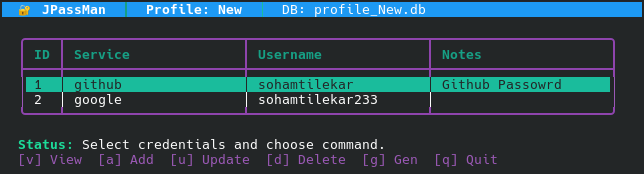
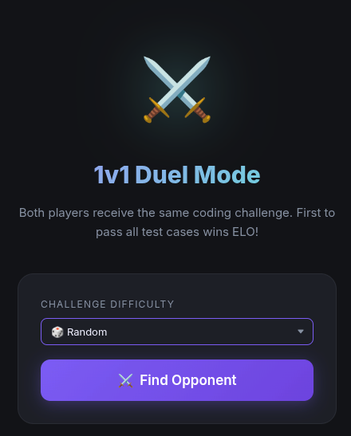

🌐 Note to Reader: Kindly visit https://sohamtilekar.github.io/Portfolio for an interactive and even better project showcase after reading this resume.
Soham Tilekar 👨💻
🚀 Core Java Developer | Backend Engineer
📄 Professional Summary
Detail-oriented Core Java Developer with a passion for building high-performance, zero-dependency backend applications and systems from scratch. Proven expertise in multithreading, concurrent data structures, socket networking (HTTP protocols), custom JVM sandboxing, cryptography, and interactive ANSI terminal UIs. Experienced in writing clean, structured code using Maven, designing memory-safe programs, and optimizing local disk persistence. Eager to contribute to a collaborative engineering team as a Core Java Development Intern.
🛠️ Technical Skills
⭐ Selected Projects
JPassMan
Java 17 | Maven | Cryptography | TUIA zero-dependency, offline-first Password Manager featuring a complete interactive Terminal User Interface (TUI) and production-grade security.
- Robust Cryptography: Implemented secure credential storage using
AES/GCM/NoPaddingwith aPBKDF2WithHmacSHA256key derivation function (65,536 iterations, 16-byte random salt, unique 12-byte IVs). - Interactive Terminal UI: Programmed a mouse-clickable and keyboard-navigable terminal interface (ANSI escape codes, SGR Mouse tracking, true tab-focus buttons, list navigation).
- Memory Safety: Explicitly designed data flow to overwrite/wipe master password char arrays immediately after key derivation to prevent memory extraction attacks.
- Standard Tooling: Packaged via Maven standard file structures, enabling native execution script wrappers and clean isolated profile databases (
.dbfiles).

Code Arena
Java 17 | Vanilla JS | Docker | MonacoA Real-Time Multiplayer Competitive Programming Platform featuring 1v1 code duels, solo challenges, and an algorithmic Elo ranking system—built from scratch with zero external framework dependencies.
- Custom HTTP Server: Engineered backend routing, JSON parsing, dynamic HTTP response headers, and session-token validation using the native
com.sun.net.httpserverpackage. - Concurrent Request Handling: Configured a custom
FixedThreadPoolexecutor to handle highly concurrent requests, session authentication, and matchmaking. - Secure Sandbox Execution: Spawns isolated execution processes using
ProcessBuilder, restricting JVM memory (-Xmx64m), enforcing I/O limitations, and checking source files for forbidden keywords to prevent sandbox escapes. - Elo Engine & State Persistence: Designed an Elo calculator combining duel speed multipliers and problem difficulty. Built persistent atomic state-saves of system states using Java
Serializable.


GigglyCode Compiler
C++ | LLVM 17A compiled programming language engineered to combine systems-level control with a clean, pythonic syntax.
- Designed and coded the entire frontend compiler flow: Lexer, Parser, AST representation, and LLVM Code Generation.
- Shows deep understanding of compiler architecture, memory layouts, static/dynamic typing systems, and low-level optimizations.
🎓 Education
B.Tech in Computer Science Engineering
Pimpri Chinchwad University, Pune
August 2024 - July 2028 (3rd Semester)
🌐 Note to Reader: Kindly visit https://sohamtilekar.github.io/Portfolio for an interactive and even better project showcase after reading this resume.